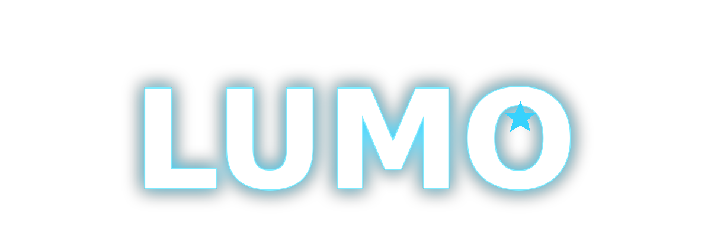
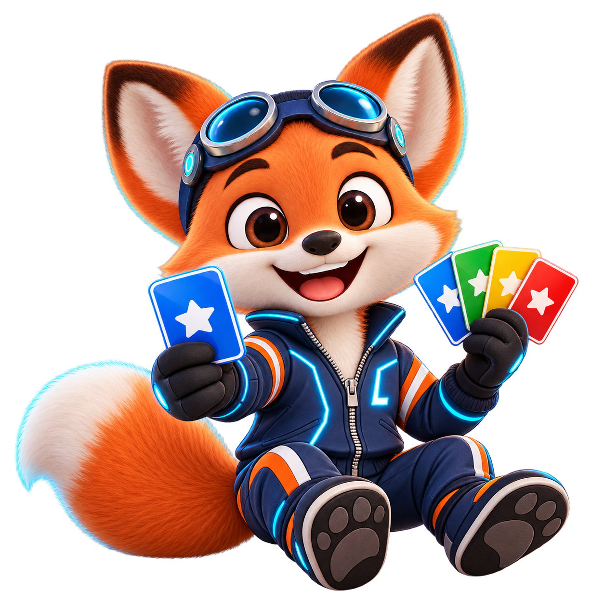
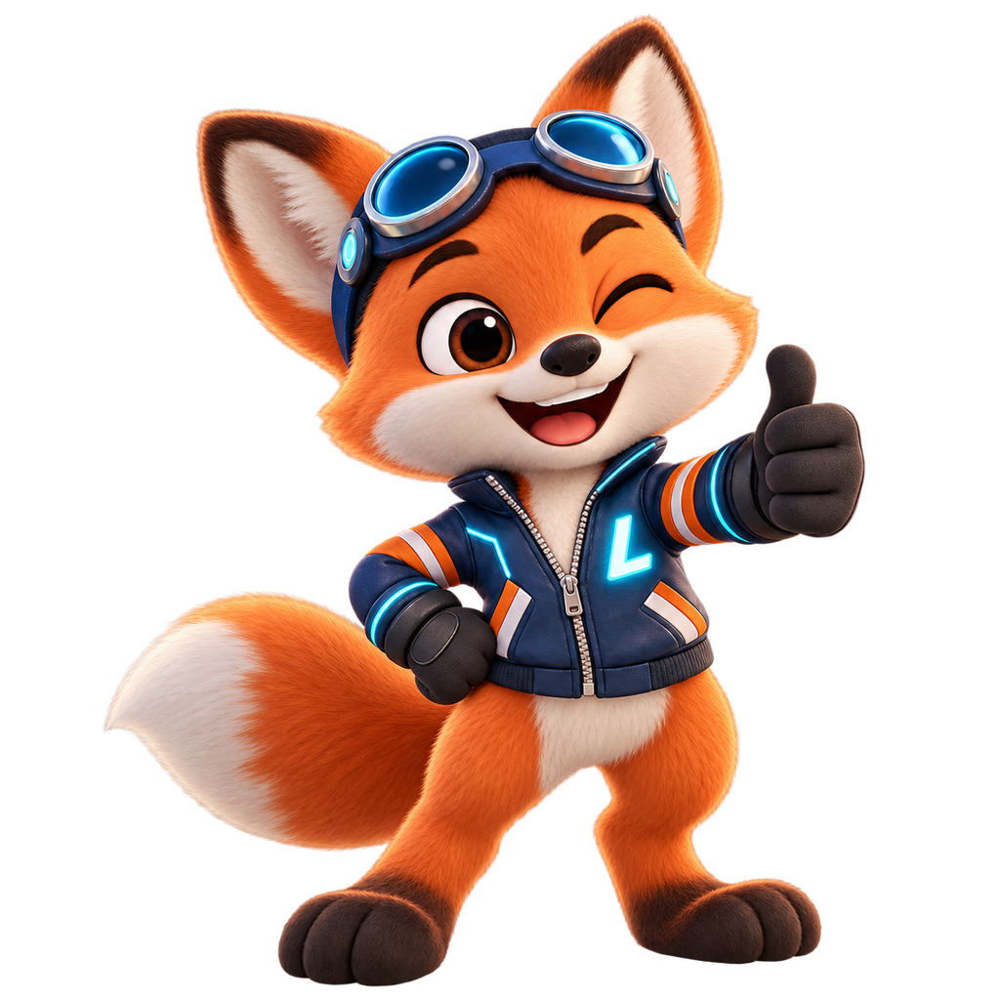

Lernen. Spielen. Weiterkommen.
LumoHallo! Schön, dass du da bist. Ich bin Lumo. Komm, wir entdecken zusammen etwas Neues!
Für Eltern von Volksschulkindern
Lernen, das Freude macht.
1. bis 4. Klasse · nach österreichischem Lehrplan
Mathematik
Deutsch
Lesen
Englisch
Sachunterricht
Logik
LumoLiebe Eltern, ich zeige Ihnen, wie Ihr Kind mit mir lernt.
Lumo Lernen
Jeden Tag ein kleines Abenteuer.
1
Aufgaben für jede SchulstufeKlasse wählen, Fach wählen, loslegen
2
Schritt für Schrittmit Hilfe, Tipp und Rückmeldung
3
Sterne, XP und Levelfür echten Lernfortschritt


Klasse wählen, Fach wählen, loslegen.
Ich führe Schritt für Schritt durch jede Aufgabe.
Für Fortschritt gibt es Sterne, XP und Level.
Nachhilfe mit Lumo
Hilfe in fünf Stufen.
11
Kleiner Tippein Hinweis, der weiterhilft
22
Anders erklärtmit Beispielen aus dem Alltag
33
Lumo zeigtmit bewegtem Material und Zahlenstrahl
44
GemeinsamSchritt für Schritt zusammen rechnen
55
Selbst prüfeneine ähnliche Aufgabe ganz allein


Erst ein kleiner Tipp …
… dann erkläre ich es anders …
… ich zeige es am Zahlenstrahl …
… wir rechnen gemeinsam …
… und dann ganz allein.
Mehr als „richtig“ oder „falsch“
Lumo erkennt Verständnis.
Nach der Hilfe kommt eine ähnliche Aufgabe. Die löst Ihr Kind allein.
✓
Erst dann gilt: verstanden.
↻
Sonst erklärt Lumo auf einem anderen Weg.


LumoSuper! Das hast du toll gemacht!
Erst lernen. Dann spielen.
Sterne aus dem Lernen sind die Spielwährung.

Die Lumo Spielwelt
Spiele, die mitdenken lassen.
Karten, Schach, Logik, Kart und mehr – alles in einer App.

Lumo Karten
Vier Spiele am Sternentisch.
Sternenstich
Sternenleiter
Quartett
Punktlandung
Rechnen, merken, schätzen – gegen Computergegner.


 Sternenstich
Sternenleiter
Lumo-Quartett
Punktlandung
Sternenstich
Sternenleiter
Lumo-Quartett
Punktlandung

Lumo Schach
Schach lernen, Zug um Zug.
Mit Lernweg: Lumo erklärt jede Figur. Danach wird gespielt.


Logikspiele
Knobeln auf der Sudoku-Insel.
Sudoku-Insel
Wörterwerkstatt
Zahlenbrücken
Rätsel für die 1. bis 4. Klasse. Wenn es hakt: „Lumo hilft“.


Und noch viel mehr
Eine ganze Spielwelt.

Für Eltern: Lumo Insight
Sehen, wo Ihr Kind steht.
1
Auf einen BlickStärken, Förderbedarf und Lernplan
2
HausaufgabenLumo hilft, wenn es hakt
3
Schularbeits-Testsüben vor der Schularbeit



Auf einen Blick: Stärken, Förderbedarf, Lernplan.
Hausaufgaben: Ich helfe, wenn es hakt.
Schularbeits-Tests: üben vor der Schularbeit.
Lernen, Nachhilfe und alle Spiele
★
Lernen. Spielen. Weiterkommen.
·